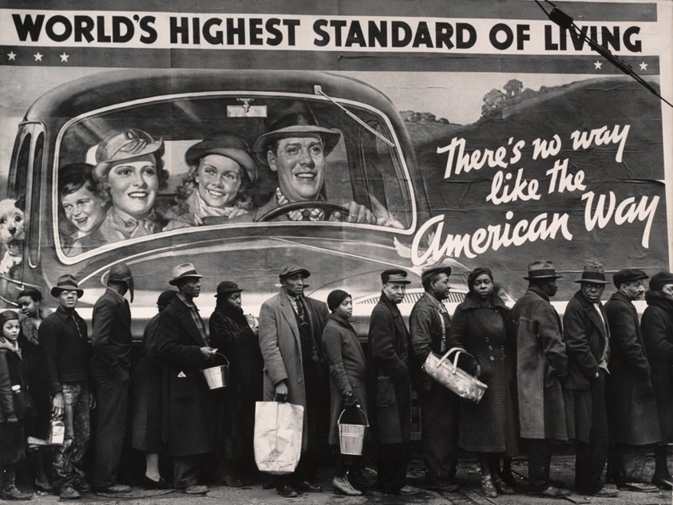

World's Highest Standard of Living (At the Time of the Louisville Flood)
Margaret Bourke-White · 1937, printed later · Gelatin silver print · 55.6 × 73.5 cm · Art Institute of Chicago
In copyright. Look and learn: shown for study, not for download.
Bourke-White made this in Louisville in early 1937 on assignment for Life, after the Ohio River flood left a million people homeless across five states. The queue is at a Red Cross relief station near 13th and Broadway, under a billboard put up by the National Association of Manufacturers. Life ran it on 15 February as the lead of a seven-photo essay, and a little over a month later the Museum of Modern Art was showing it. One of the first uses of the title At the Time of the Louisville Flood was at the National Gallery of Canada in 1967.